Префектура Миэ · Исэ · архитектура и обряды
Святилище Исэ изнутри: как устроены его здания, зачем здесь 1500 обрядов в год и где увидеть то, что скрыто за оградой

Главные залы святилища Исэ кажутся простыми деревянными домиками под соломенной крышей. Но за этой простотой стоят древний стиль японской храмовой архитектуры, материалы, которым нет цены, и около 1500 обрядов в год.
Архитектура
Синмэй-дзукури: древний и простой стиль
Главные здания Внутреннего святилища Найку и Внешнего святилища Гэку построены в стиле, который называют «юйицу синмэй-дзукури», то есть «единственный синмэй-дзукури». Это исконный, очень древний стиль японских святилищ. Обычный синмэй-дзукури встречается по всей стране, но два главных зала Исэ стоят особняком: их строят только для этих двух святилищ, и их по праву считают двумя вершинами этого стиля. Разобраться в устройстве нам помог историк японской архитектуры, который изучает святилища по раскопкам и старинным текстам и участвовал в реконструкциях древних построек.
Чем отличаются Найку и Гэку
Снаружи почти ничем. Различия видны только в деталях: в числе брёвен на коньке крыши, в том, как срезаны концы скрещённых балок над фронтонами, и в числе отверстий в них.
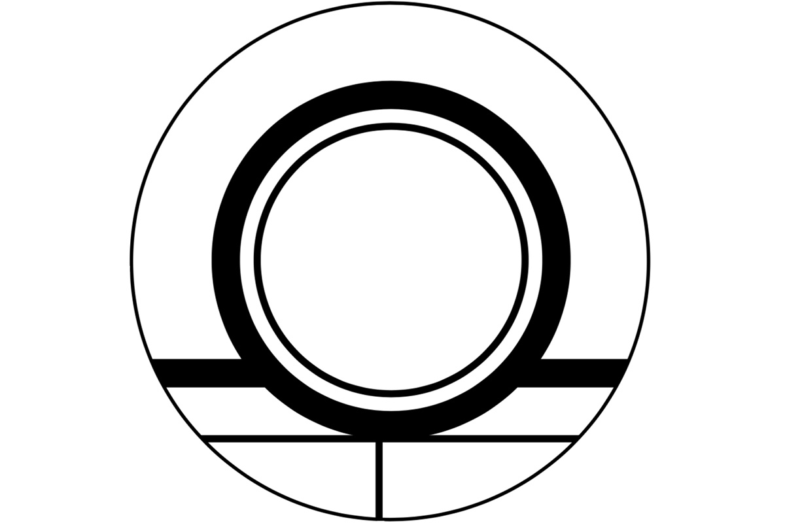
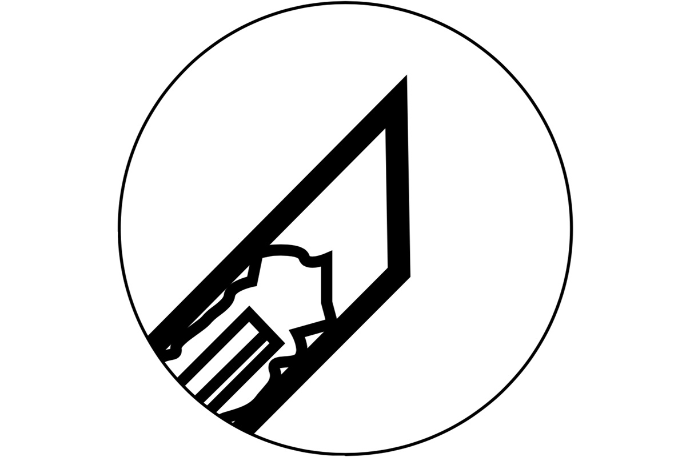
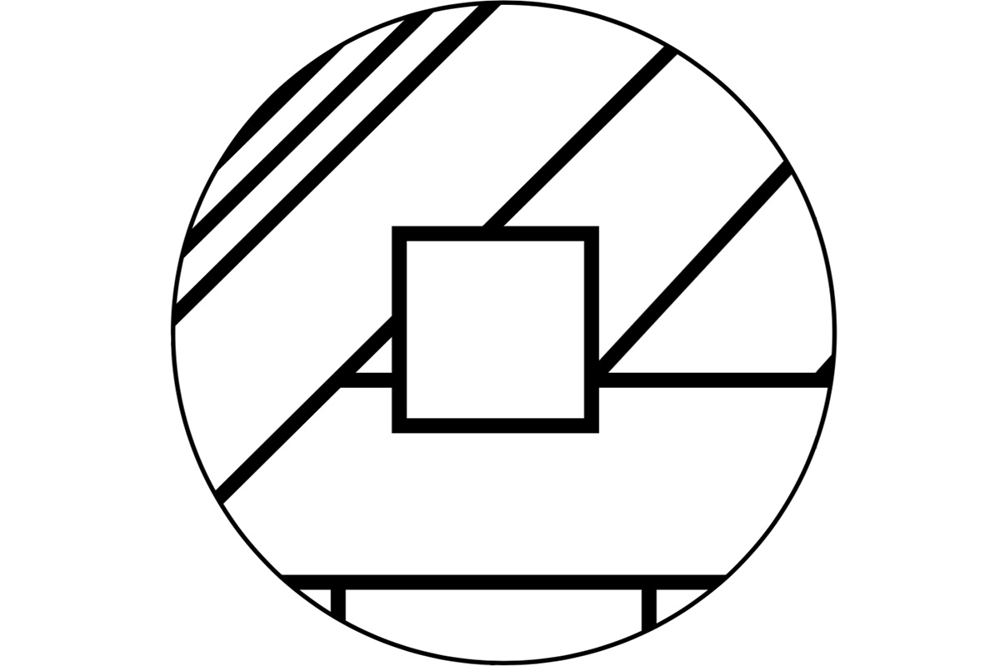
Как узнать синмэй-дзукури
Главная примета этого стиля в крыше. Она двускатная, «киридзума», а вход устроен в длинной стене, параллельной коньку. Японцы называют такую стену «хира», а торцевую, с треугольным фронтоном, «цума». Отсюда и термин «хираири», вход со стороны хира.
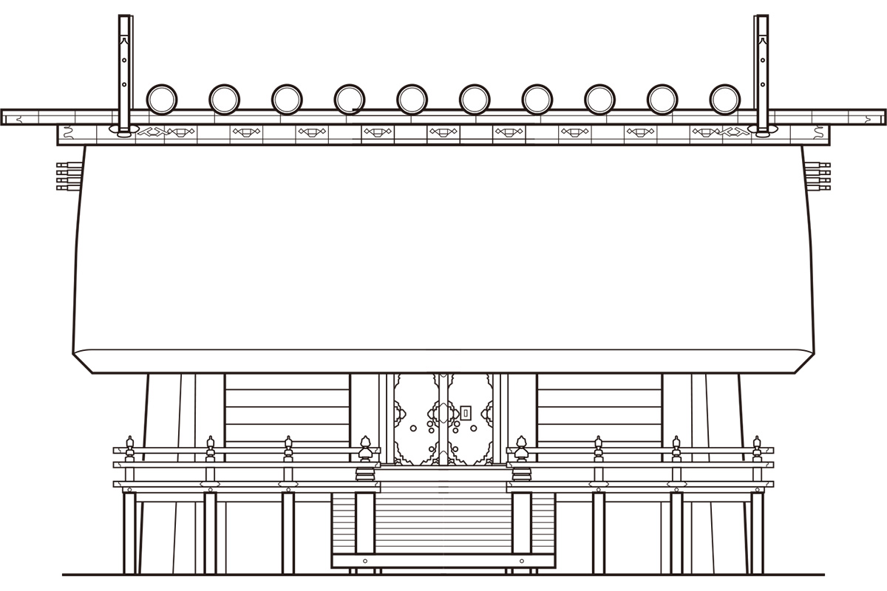
Ещё одна черта стиля: столбы не стоят на каменных основаниях, а вкопаны прямо в землю. Такая конструкция называется «хоттатэ-басира».
Откуда взялась эта форма? Долго считалось, что прообразом главного зала Исэ был амбар для зерна эпохи Яёй. Но затем в префектуре Нара раскопали Макимуку, дворцовый комплекс ранних правителей Ямато, и среди его построек нашли здание, устроенное почти так же, как святилища Исэ. Учёный предполагает, что форма сложилась при дворе, где такие здания служили сокровищницами, а уже оттуда пришла в Исэ.
Простой дом из бесценных материалов
Если коротко, главный зал Исэ это очень простое по устройству здание из невероятно дорогих материалов. Возьмём торцевые столбы «мунамоти-басира», которые стоят снаружи стен и держат конёк. Их делают из кипариса хиноки, выросшего в долине Кисо, и на них не найти ни одного сучка. По словам учёного, бревну такой толщины и длины без единого сучка просто невозможно назначить цену, и позволить себе такой лес в Японии может, вероятно, только святилище Исэ.
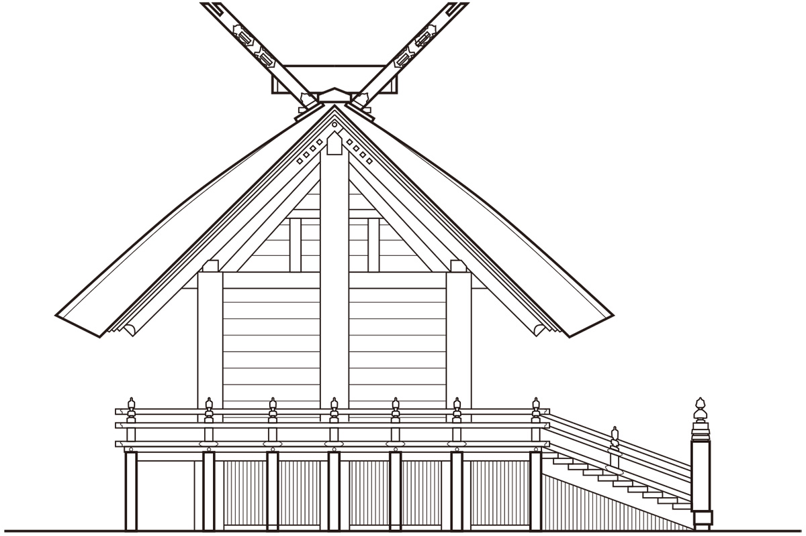
Мискант для кровли тоже берут только свой: его выращивают на обширных полях, принадлежащих святилищу. Каждые двадцать лет главные залы строят заново, и последняя такая перестройка, сикинэн сэнгу, прошла в 2013 году. Древняя конструкция при этом не меняется, а вот мелочи вроде декоративного металла от раза к разу немного другие. Особенно богатыми материалами, как говорят, отличалась перестройка 1929 года, когда страна была на подъёме.
Синмэй-дзукури за пределами Исэ
Этот стиль японцы видят чаще, чем думают. Крыша, которую во время турниров подвешивают над рингом в токийском дворце сумо Рёгоку Кокугикан, сделана в стиле синмэй-дзукури. Тот же силуэт у домашних алтарей камидана: алтари, которые получают в святилище Исэ, повторяют форму его главных залов.
Обряды
1500 праздников в год
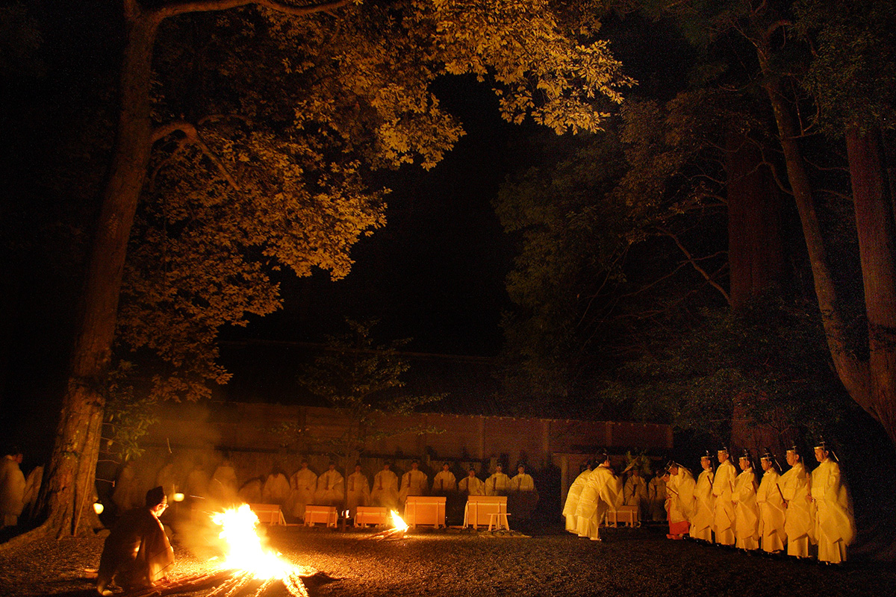
В святилище Исэ проводят больше 1500 обрядов в год. Число кажется огромным, пока не узнаешь, что кроме Найку и Гэку святилищу принадлежат ещё 125 больших и малых святилищ, и в каждом свой годовой круг. Проще всего это понять на примере ежедневной трапезы: дважды в день, утром и вечером, богам подносят еду, и только это даёт 730 обрядов за год.
С древности эти обряды совершали императоры, моля об урожае, о мире и благополучии страны. Подробнее о смысле праздников рассказал профессор синтоистской обрядности, сам настоятель одного из святилищ.
Каннамэсай: благодарность за рис
Важнейшие обряды года называют «сансэцусай»: это Каннамэсай и два праздника Цукинамисай, в июне и декабре. Главный из них Каннамэсай, и он целиком связан с рисом. По мифу, когда внук богини солнца Ниниги-но микото спускался на землю, Аматэрасу-омиками вручила ему рис, который выращивала сама, чтобы люди на земле начали его сеять. Рис, выходит, дар богов, а богатый урожай означает процветание страны. Поэтому молитва об урожае была главной обязанностью императора как представителя народа.
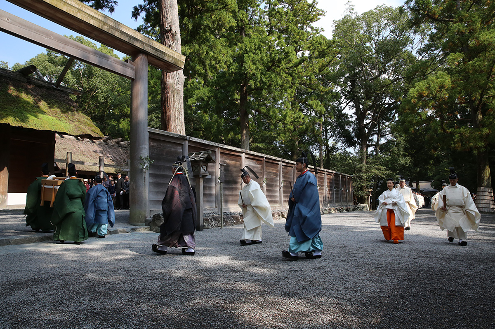
Рисовый год святилища открывается в апреле: на священном поле сеют семена (Синдэн-гэсюсай). Затем начинают сажать рассаду (Синдэн-отауэ-хадзимэ), летом просят защитить посевы от ветра и дождя (Кадзахиноми-сай), а в октябре, когда рис собран, проходит Каннамэсай. Это благодарность богам за рис, который поддерживает жизнь, и для императора она важнее всего остального.
Календарь главных обрядов
Вот главные события года в святилище:
- Январь. 1-го встречают Новый год, 11-го подносят богам угощение и исполняют придворные танцы бугаку.
- Февраль. С 17 по 23 число проходит Кинэнсай, молебен о богатом урожае.
- Март. В день весеннего равноденствия молятся об урожае овощей и фруктов.
- Апрель. В начале месяца сеют рис на священном поле. С 28 по 30 число весенний праздник Кагурасай: на открытой сцене в саду Найку для всех исполняют бугаку.
- Май. 1-го начинают ткать для богов шёлк «нигитаэ» и пеньковую ткань «аратаэ», 14-го просят о защите от ветра и дождя, в начале месяца высаживают рассаду.
- Июнь. Молятся о хорошем сакэ для обрядов, с 15 по 25 число проходит Цукинамисай, 30-го обряд очищения.
- Сентябрь. В начале месяца срезают колосья риса для богов. С 22 по 24 число осенний Кагурасай, а в середине осени праздник любования луной со стихами и танцами.
- Октябрь. 5-го молятся о соли для обрядов и о тех, кто её добывает. 14-го богине подносят новые одежды, с 15 по 25 число проходит Каннамэсай.
- Ноябрь. С 23 по 29 число Ниинамэсай: во дворце император сам вкушает новый рис, а в Исэ приезжает его посланник с дарами.
- Декабрь. С 15 по 25 число второй Цукинамисай, 31-го очищение перед новым годом.
И каждый день, утром и вечером, богам подносят трапезу.
Сэнгукан
Музей перестройки у Внешнего святилища
У святилища Исэ четыре музея. Двум из них стоит отвести время, если хочется понять Исэ глубже.
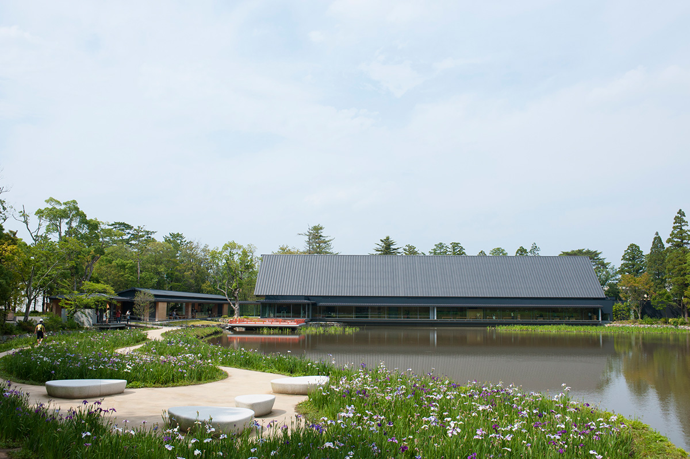
Сэнгукан стоит слева от первых ворот тории Внешнего святилища. Как видно из названия, его построили в честь перестройки сикинэн сэнгу, и среди музеев святилища он самый молодой. В длинном вытянутом здании показан обряд «сэнгё-но ги», главный момент всей перестройки, когда божество переносят из старого главного зала в новый: процессия воссоздана в масштабе 1:6. Подробно и живо показано и то, как делают священные сокровища. Экспозиция в основном посвящена Гэку.
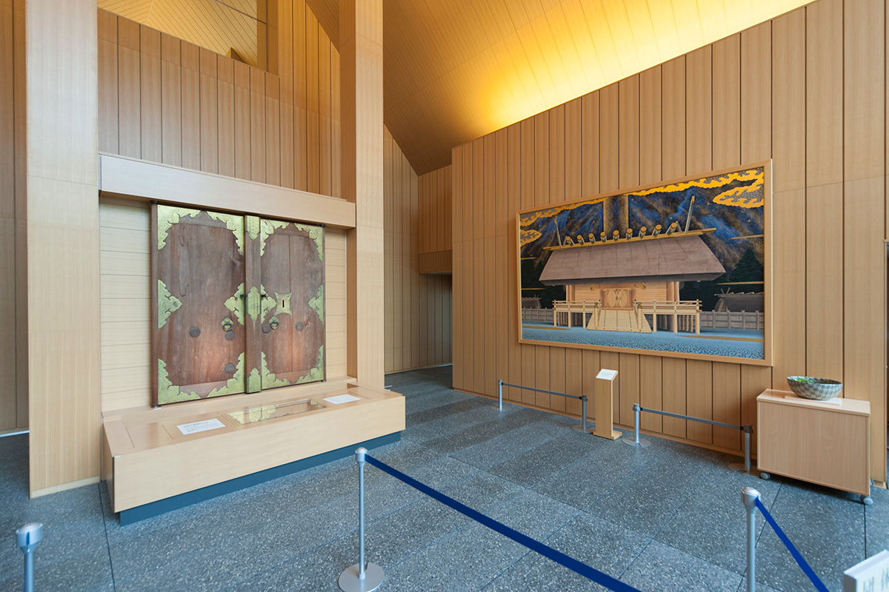
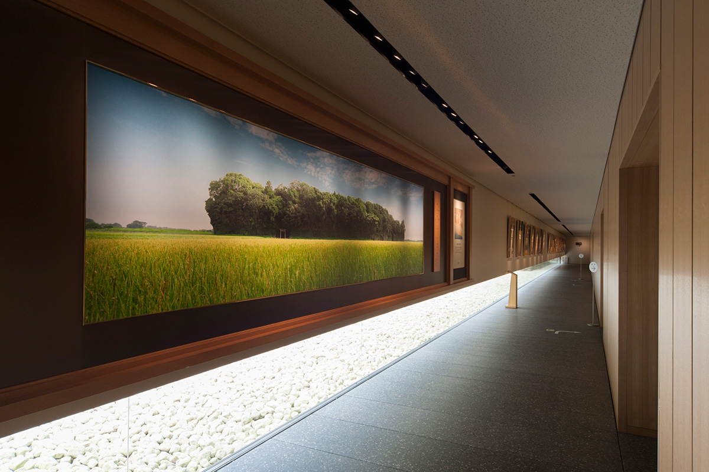
Самое сильное впечатление производят макет главного зала в масштабе 1:20 и стоящая за ним боковая стена зала в натуральную величину. Увидеть сам главный зал паломники не могут, а здесь его размах можно рассмотреть вблизи.
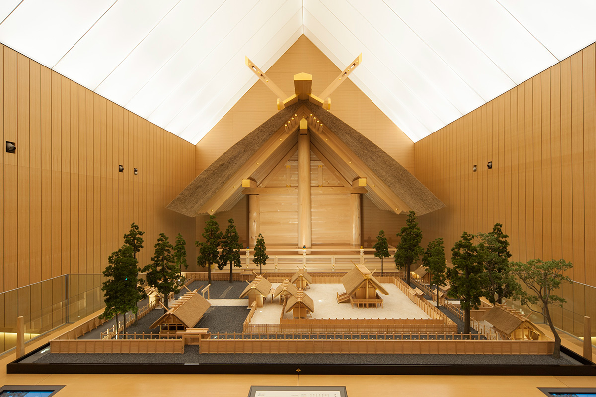
Рекомендуем такой порядок: сначала помолиться в Гэку, представляя себе главный зал, который не увидишь, а потом прийти в Сэнгукан и рассмотреть его в макете. После музея можно отдохнуть в зоне отдыха и не спеша отправиться во Внутреннее святилище.
Сэнгукан
- Адрес
- префектура Миэ, Исэ, Тоёкава-тё, Маэно, 126-1 (у пруда Магатама-икэ на территории Гэку)
- Телефон
- +81 596-22-6263
- Часы работы
- 9:00–16:30
- Выходные
- 2-й и 4-й вторник месяца (если праздник, то на следующий день), бывают дни смены экспозиции
- Цены / Вход
- 300 иен
- Сайт
- sengukan.jp
Тёкокан
Сокровища, которые богам больше не нужны
После молитвы в святилище стоит заглянуть в Дзингу Тёкокан. Музей открылся в 1909 году и хранит около 13 000 предметов, связанных с обрядами, историей и культурой святилища, из них 11 признаны важными культурными ценностями.
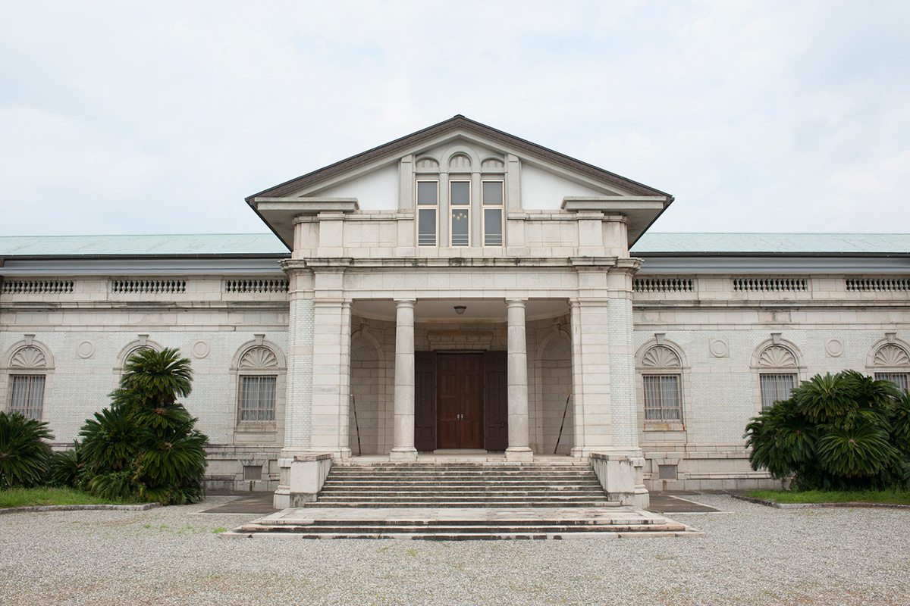
Здание проектировал Токума Катаяма (1854–1917), придворный архитектор эпохи Мэйдзи, автор дворца Акасака в Токио. Тяжеловесный фасад в духе европейского Ренессанса неожиданно смотрится среди лесов Исэ.
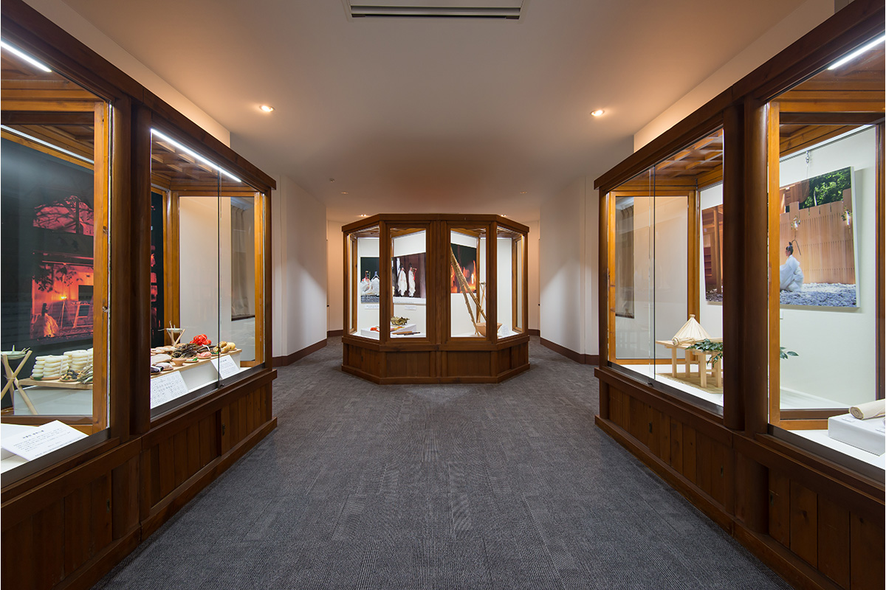
Внутри на примерах обрядовой утвари и подношений понятно объяснено, как живёт святилище. Есть раздел о перестройке сикинэн сэнгу с подлинными одеждами и сокровищами, которые изготавливают заново к каждой перестройке, и зал временных выставок. Главное, ради чего сюда идут, это священные сокровища. Все они когда-то были преподнесены богам, а после очередной перестройки выведены из обращения, и красота их такова, что словами её не передать.
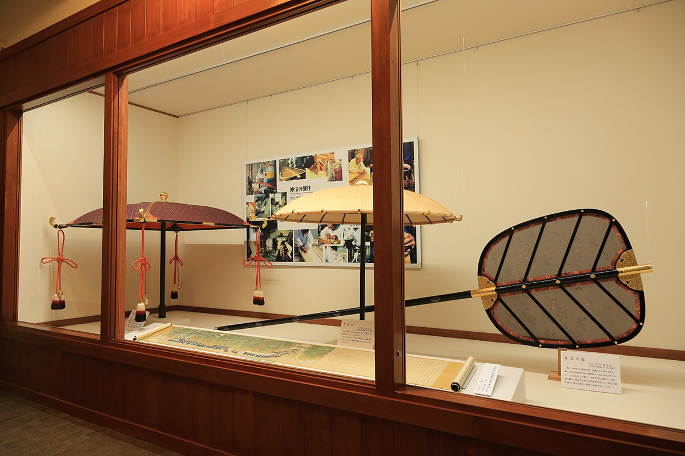
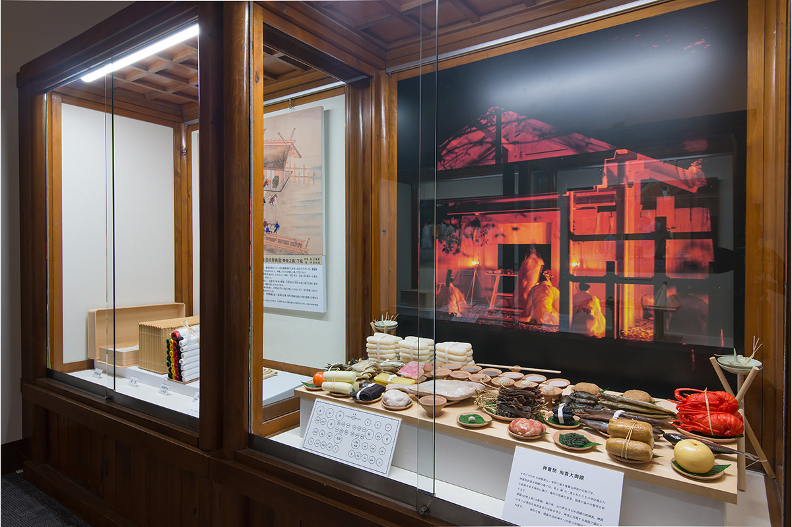
Тёкокан не просто хранилище. Здесь можно понять святилище Исэ глубже, а через него и те корни, из которых выросла японская культура.
Дзингу Тёкокан
- Адрес
- префектура Миэ, Исэ, Кода-Кусимото-тё, 1754-1
- Телефон
- +81 596-22-1700
- Часы работы
- 9:00–16:30
- Выходные
- понедельник (если праздник, то на следующий день), три последних дня года, бывают дни смены экспозиции и обработки фондов
- Цены / Вход
- 300 иен
Святилище Исэ
- Адрес
- префектура Миэ, Исэ, Удзи-Тати-тё, 1 (Внутреннее святилище Найку)
- Телефон
- +81 596-24-1111 (управление святилища)
Фото: Харуми Обама, Ко Мияди, Харуо Накано, Цутому Ватанабэ.